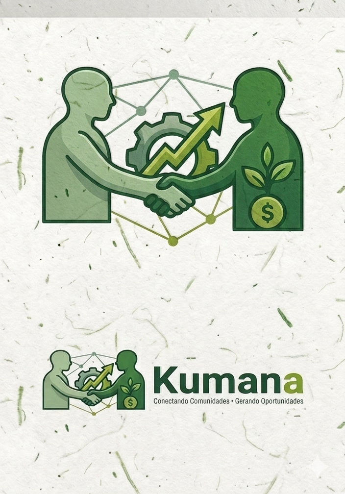
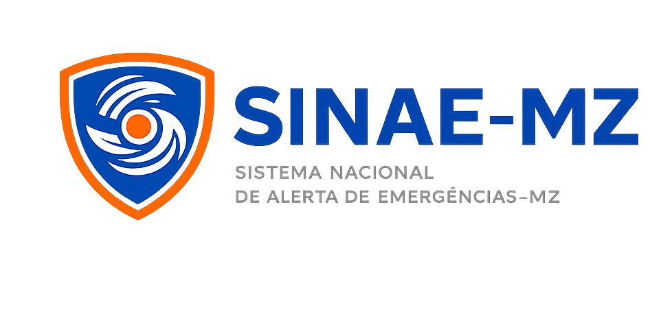

Desenvolvedora Web | Criativa | Solucionadora de Problemas
Ola, sou Bernardete Bartolomeu Dos Santos, nascida aos 10 de Novembro de 2004, na cidade de Nacala-Porto.
Residente no bairro triangulo, casa N34 Q1.
Formada em Higiene e Seguranca no Trabalho, em Informatica Basica e Programacao (especificamente na criacao de paginas web e apps).
Sou desenvolvedora apaixonada por tecnologia e design.
Trabalho com HTML, CSS e JavaScript criando interfaces modernas,
performáticas e responsivas.
Apaixonada por transformar ideias em realidade digital.
Actualmente estudante universitaria do curso de Licenciatura em Gestao de Transporte e Logistica na Universidade Rovuma, extensao de Nacala.

Visa conectar pessoas com várias experiências, comunidades que precisam de ajuda e pessoas que querem aprender ou oferecer serviços.
Visualizar Projeto
Desenvolvido em grupo, composto por 3 elementos, nomeadamente: Elves Antonio, Bruno dos Santos e Bernardete Bartolomeu. Criado para alertas de violência, calamidades naturais e outras situacoes, com o o objectivo de ajudar comunidades que em casos de um alerta, podera alertas atraves do site para as entidades competentes poderem dar assistencia.
Visualizar Projeto